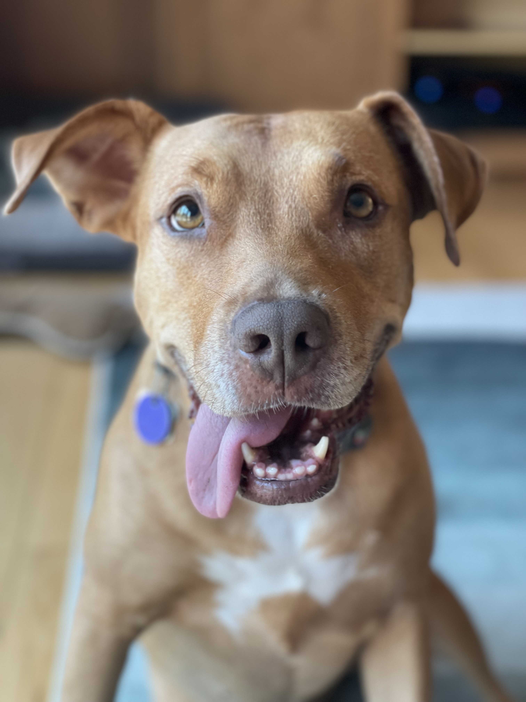
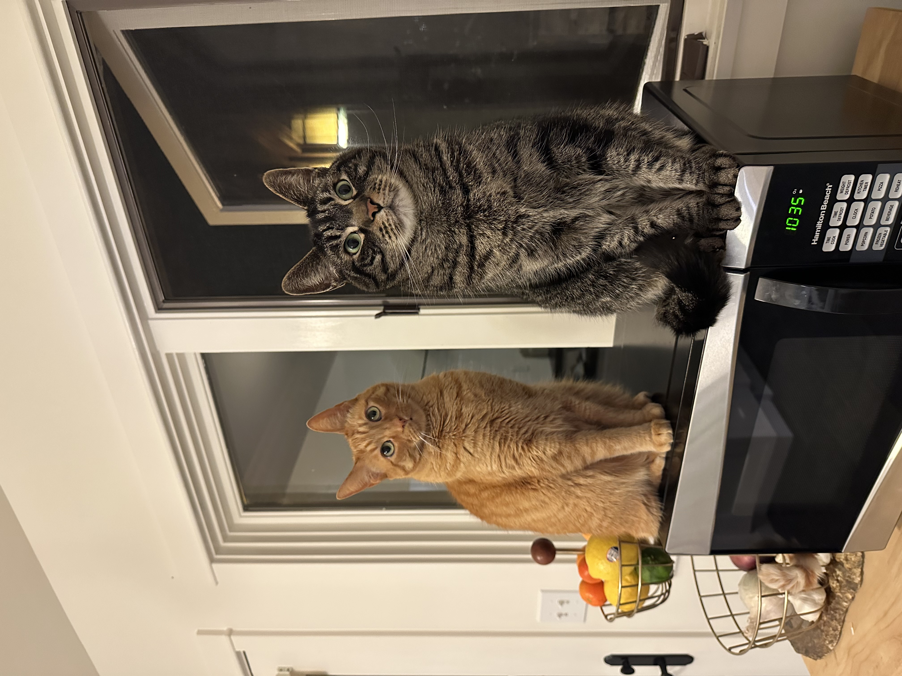
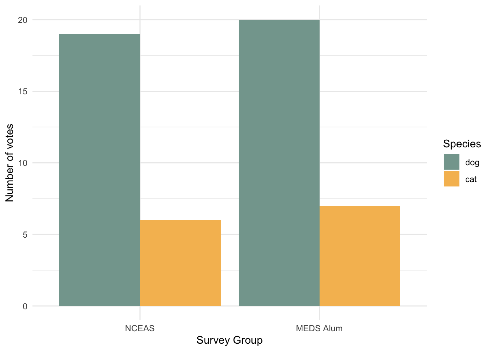
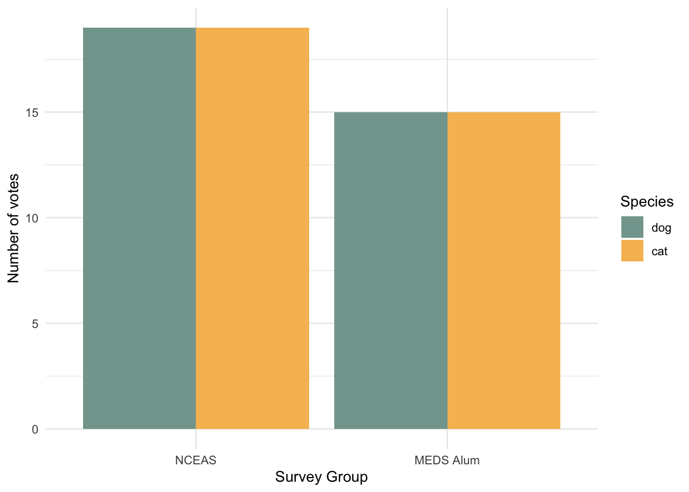

Are dogs or cats cuter?
A very important report
Background information
Dogs are so cute, but so are cats. We set out to collect evidence to determine once and for all which are the cutest.


Methods
Data collection
In the most scientific approach possible, we surveyed experts in the field of cute animals on Slack. I posed the question,
@channelthis is very important (I need some data for a demo) – plz react to this message with a 🐱 or a 🐶 indicating which you believe to be the cuter animal ❤️
on Friday, June 23, 2023 at 11:45 PT in two Slack workspaces (survey groups):
- the
#cutenesschannel of the NCEAS workspace - the
#generalchannel of the MEDS Alum workspace
Because this is a nearly impossible ask of anyone, respondents were allowed to vote twice if they so desired.
Votes were recorded until Friday, June 30, 2023.
Analysis
Total votes for dogs vs. cats in each survey group were first compared. If there was a difference in the number of votes for dogs vs. cats within either of the survey groups, we thought hard about how that would make the “less” cute animal feel, told them that they were in fact the cutest little baby(ies) in the whole world, and adjusted votes accordingly.
Disclaimer
No animals (or their feelings) were harmed in this study.
Results
A total of 52 votes were recorded with a response rate of 25/33 for the NCEAS Slack workspace and 27/61 for the MEDS Alum Slack workspace.
Respondents in the NCEAS and MEDS Alum Slack workspaces both ranked dogs as cuter than cats.

Because we simply could not allow this, cats received an additional 13 votes for the NCEAS survey group and an additional 13 votes for the MEDS Alum survey group.

In Summary
Despite our rigorous approach to data collection and analysis, there is simply no way to actually determine whether dogs or cats are cuter (I mean…look at those faces!!). For now (and forever), this one will remain a draw.

Explore our analysis on GitHub. If you have suggestions on how to improve this report, please file an issue.